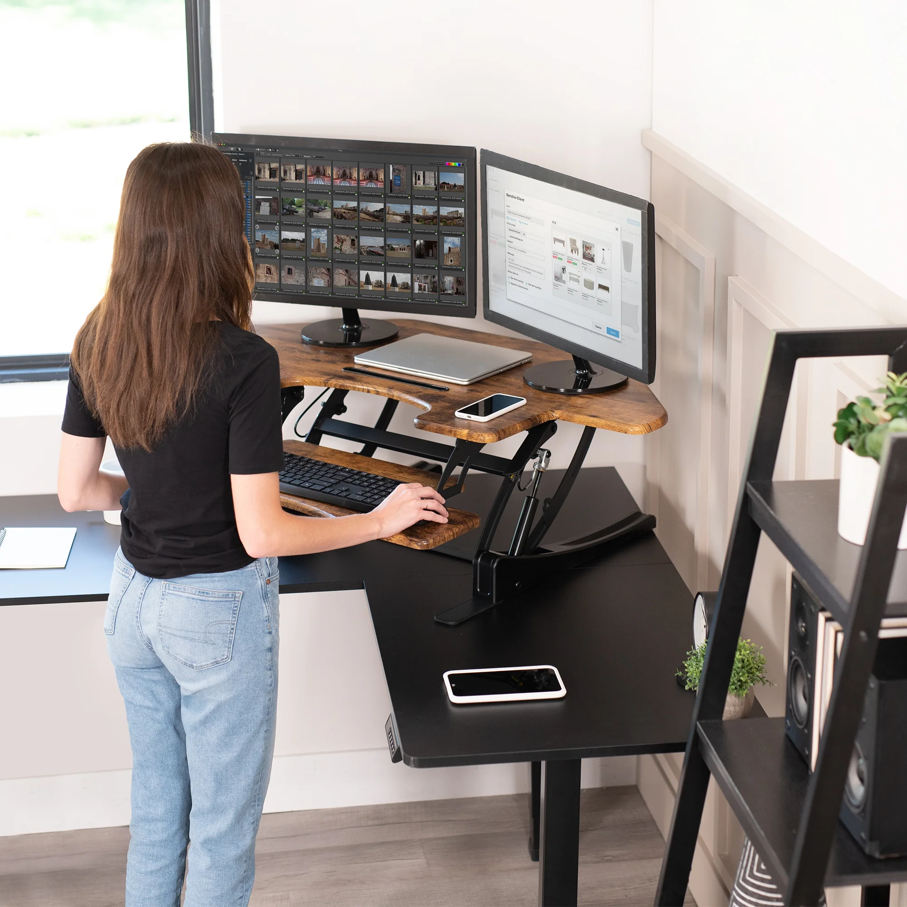
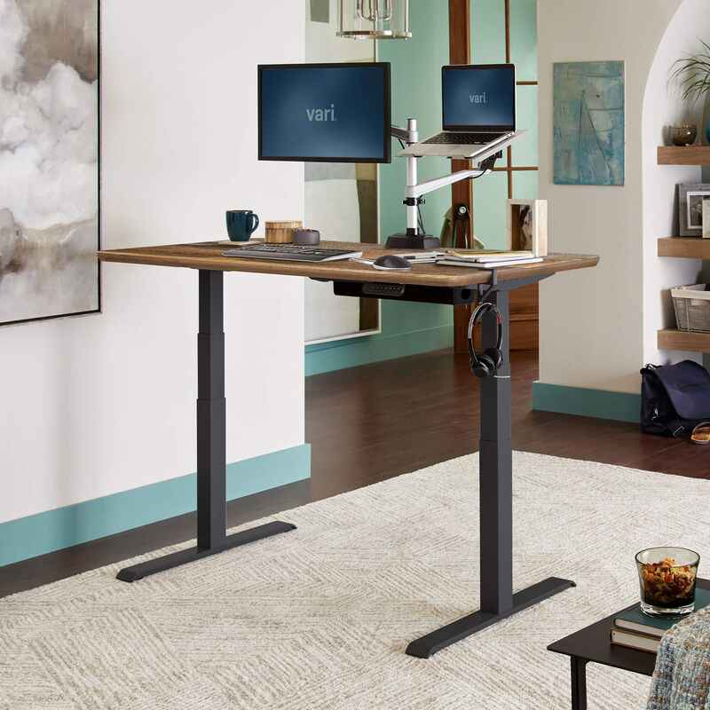

- A standing desk is a workstation designed to allow you to work while standing
instead
of sitting. Many models are adjustable, enabling you to switch between sitting and
standing positions for improved comfort and ergonomics.
- Standing desks are popular for their health benefits, such as reducing back pain,
improving posture, and promoting better energy and focus throughout the day.
- Many models are adjustable, enabling you to switch between sitting and
standing positions for improved comfort and ergonomics.


Standing Desk Health Benefit
- Standing desks offer several health benefits, including reducing the risks associated
with prolonged sitting, such as obesity, heart disease, and diabetes.
- They help improve posture, alleviate back and neck pain, and promote better blood
circulation. Standing
also burns more calories than sitting, aiding in weight management.
- Additionally, alternating between sitting and standing can boost energy levels, reduce
fatigue, and enhance overall well-being, making standing desks a valuable tool for a
healthier lifestyle.
How to benefit using standing desk?
- A standing desk is a workstation designed to allow you to work while standing
instead
of sitting. Many models are adjustable, enabling you to switch between sitting and
standing positions for improved comfort and ergonomics.
- Standing desks are popular for their health benefits, such as reducing back pain,
improving posture, and promoting better energy and focus throughout the day.Ensure
the
desk is adjusted so your arms are at a 90-degree angle and your monitor is at eye
level.
- Use an anti-fatigue mat and wear comfortable shoes to reduce strain.
- Incorporate light movement, such as shifting your weight or taking short walks, to
improve circulation and energy levels, enhancing productivity and overall
well-being.